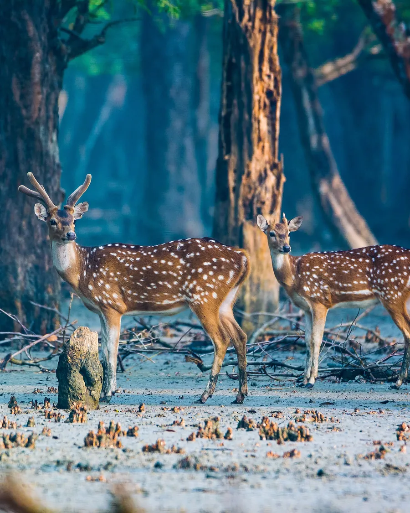

Khulna DivisionThe Sundarbans
The largest mangrove forest on earth, about 10,000 square kilometres of it, and the only mangrove in the world that holds tigers. You travel by boat because there is no other way in. Kotka, Hiron Point, Karamjal. Deer, crocodiles, kingfishers, and if you are lucky, pugmarks in the mud at low tide.